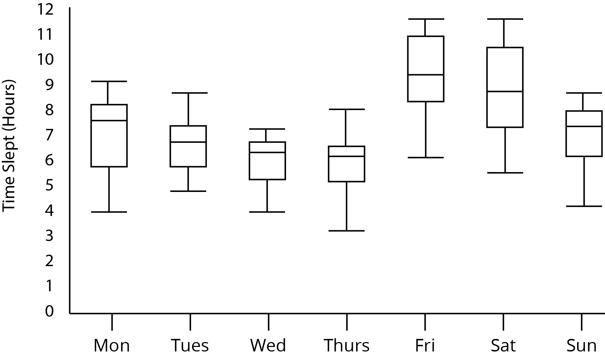

Visualização de Dados 2016.2 Lista de Exercícios 4
Informações Gerais
Os três primeiros exercícios desta lista são obrigatórios (todos alunos devem fazer). Os problemas remanescentes só são obrigatórios para alunos de pós-graduação. Os alunos de graduação que resolverem o problema 4 integralmente, receberam créditos extras na nota das listas de exercício.
Data de Entrega
A entrega deverá ser feita via GitHub até 14/10/2016 até 23:59. Veja as instruções para entrega
aqui.
Problema 1 (Para todos os alunos)
Neste problema faremos uso da técnica de redução,
Box Plot, para construir sumários visuais de coleções de dados. Você implementará o que se pede a seguir em uma página html chamada problema1.html e um arquivo js chamado problema1.js. Para testes você deverá usar um conjunto de dados de temperatura em New Bedford (obtido do professor David Koop da Universidade de Massachussets). O conjunto de dados pode ser incluído no código através do comando:
<script src="http://www.cis.umassd.edu/~dkoop/dsc530/a1/nbweather.js" type="text/javascript"></script>
Esses dados contém medidas de temperatura mínima, média e máxima para diversos dias durante os anos de 2013, 2014, 2015 e 2016. A sua tarefa será implementar uma função
boxPlot(ano,temp) que dado um ano (exemplo, 2015) e um tipo de temperatura (deve ser "min", "med", ou "max") desenha um plot contento um box plot cada mês do ano correspondente para o tipo de temperatura desejada. Cada box plot, deverá ser construído como visto como
neste exemplo. Como parte da sua entrega, deixe no html o resultado de boxPlot(2015,"med"). O seu plot final deverá se assemelhar ao exemplo a seguir:

Problema 2 (Para todos os alunos)
Neste problema implementaremos a técnica Kernel Density Estimation. Para fins de comparação também iremos implementar uma função para computação de histogramas.
Como visto em sala, existem
várias funções de Kernel que podem ser usadas.
No que se segue, usaremos o
Kernel Gaussiano, definido no link anterior. Iremos implementar:
- Uma função chamada histogram(arrayDeNumeros, esquerda, direita, numeroDeBins), que cria um histograma com o numero de bins dado cobrindo o intervalo entre os valores esquerda e direita. Por exemplo, para criar um histograma com 10 bins no intervalo [0,1] (para um certo conjunto de dados), usaremos histogram([0,0,0.5,0.6,0.75,0.75,0.8,1],0,1,10).
- Uma função chamada kde(arrayDeNumeros,amplitude,esquerda,direita,numeroDeSamples) que cria o gráfico da função de densidade estimada com Kernel Gaussiano, com um valor de amplitude dado (a amplitude corresponde à variável h na fórmula vista em sala. A fim de poder plotar o gráfico, usaremos os parâmetros auxiliares, esquerda, direita e numeroDeSamples. Eles significam que devem ser tomados um numeroDeSamples igualmente espaçados no intervalo [equerda,direita] para plotar a linha do gráfico. Note no entando que essas variáveis são usadas somente para o gráfico, não sendo, portanto, intrínsicas do KDE.
Problema 3 (Para todos os alunos)
Em tempos de eleição, iremos construir uma visualização para mostrar os votos recebidos pelos candidatos a veriador da cidade do Recife (dados contidos no arquivo
cand_ver_recife_2016.csv. Queremos não somente entender os votos recebidos por cada candidato, mas também os votos por partido. Para isso usaremos a técnica
treemap. A hierarquia a ser visualizada é basicamente os diferentes partidos (pais) e seus candidatos (filhos). O tamanho dos tiles da treemap deve ser proporcional ao número de votos do candidato. Os tiles de cada partido devem ser coloridos com a cor do partido correspondente. Para fazer a visualização, use o
TreemapLayout do d3.
Problema 4 (Obrigatório apenas para alunos de pós-graduação)
Implemente uma função kde2D(arrayDePontosNoPlano,amplitude,limiteEsquerda,limiteDireita,limiteInferior,limiteSuperior,N) que dado um conjunto de pontos no plano, desenha a Kernel Density Estimation no plano usando o Kernel Gaussiano. A Kernel Density Estimation deve ser mostrada como um mapa de cores, onde as cores são estimadas em um grid retângular dado pela bounding box [limiteEsquerda,limiteDireita]x[limiteInferior,limiteSuperior] e contêm N*N células. Inclua um checkbox cuja função é mostrar ou esconder os pontos de entrada (os pontons na lista arrayDePontosNoPlano). Insira dois botões cujas função são "diminuir amplitude" e "aumentar amplitude" (modificar o valor da amplitude dos kernels usados para construir a visualização). A sua visualização deverá ser atualizada quando o usuário interagir com o checkbox ou um dos botões.
{kind=link}